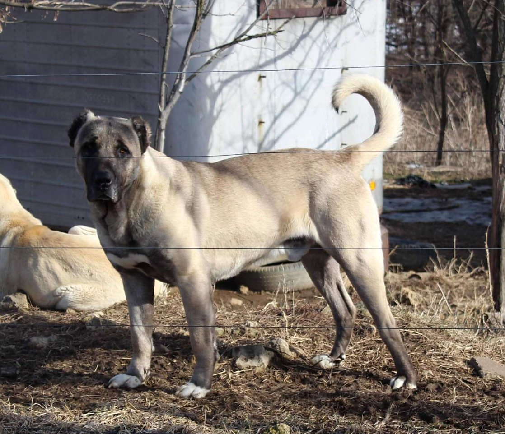
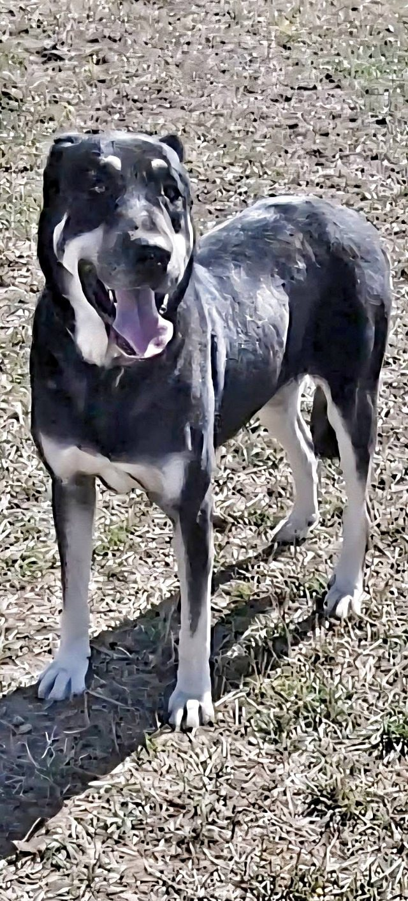

The breed
The Turkish Boz Shepherd
An ancient livestock guardian from Turkey — powerful, calm, and deeply loyal. In Turkish, boz means grey: the Boz Çoban Köpeği, the grey shepherd dog.

History & purpose
Three thousand years with the flock.
The Boz Shepherd comes from southeastern Turkey, where shepherds have relied on it for millennia to guard sheep and goats from wolves, bears, and jackals.
It was never bred to herd or to take orders. It was bred to live with the flock, read the landscape, and decide for itself when a threat is real — then meet it.
That history explains the dog you bring home: steady with the animals and people it knows, and immovable when something threatens them.
Temperament
What makes a Boz a Boz.
Guardian instinct
Bonds with the animals and people in its care, patrols its ground, and places itself between them and any threat.
Independent
Bred to make decisions alone in the field. Highly capable — but not a dog that waits to be told what to do.
Loyal
Deeply attached to its own family and household; reserved and watchful with strangers.
Intelligent
Reads situations quickly and remembers. Learns routines and boundaries fast, and is bored by repetitive drills.
Naturally protective
Escalates only as far as needed — warns first, then stands its ground. That judgment is what makes a good guardian.
Calm at home
Moderate energy. Quiet and steady around the house, alert the moment something changes.
Before you decide
A working guardian, not an ordinary pet.
Boz Shepherds keep the instincts they were bred for. They need room, secure fencing, early socialization, and an owner who works with their independence rather than against it.
Raised that way, they are among the most devoted dogs you will ever own.
At a glance
Breed characteristics
A giant breed that matures slowly — most reach full size and maturity at two to three years old.
- Origin
- Turkey
- Type
- Livestock guardian dog
- Height
- Males 30–34 in · Females 28–32 in
- Weight
- 140–200+ lbs
- Coat
- Short to medium, dense double coat
- Colors
- Grey, brindle, fawn, cream, white, and black-and-white — often with a black mask
- Lifespan
- 11–13 years
- Energy
- Moderate — calm at home, alert on duty
Coat colors
Grey, brindle, fawn — and white.
The breed comes in a wide range of coats, from solid cream and white to brindle and black-and-white. Our own dogs show much of that range.
-

GreyKuma
-

BrindlePaige
-

FawnTank
-
Cream & whiteTalat
-

Black & whiteZaina
Did you know
Remarkable by any measure.
Minik
A world-record bloodline
Ruby and Nala descend, through their sire, from Minik — recorded as the tallest Boz Shepherd in the world.
30+ mph
Fast for their size
Despite 140–200+ lbs of bone and muscle, a Boz Shepherd can sprint past 30 miles per hour.
743 PSI
A formidable bite
Widely cited as one of the strongest bite forces of any domestic dog — enough to turn back wolves and bears.
Is a Boz right for you?
The right home matters.
Turkish Boz Shepherds thrive in homes where they have room to work, bond with their families, and have their natural guardian instincts respected.
A great fit for
- Farms, ranches, homesteads, and rural acreage
- Families who want a devoted, watchful guardian
- Owners with secure fencing and room to patrol
- People who respect an independent, thinking dog
Probably not the right fit for
- Primarily urban living
- Being chained, isolated, or kenneled full-time
- Owners unwilling to understand and work with an independent livestock guardian breed
Sound like your kind of dog?
Tell us about your home and what you need from a guardian.